Mode 01
Life as Usual (LaU)
The battery balances local energy supply and demand by storing excess renewable energy and releasing it when needed, reducing grid congestion and peak demand.
Community batteries as a strategic asset during a 72-hour power outage.
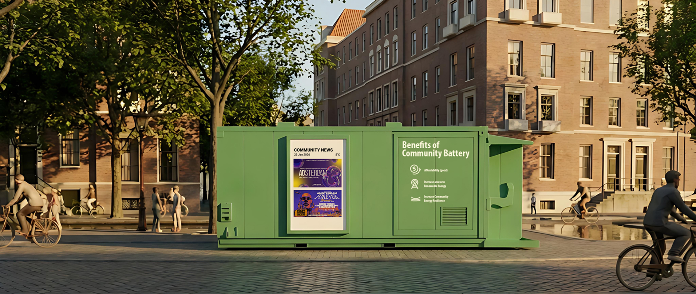
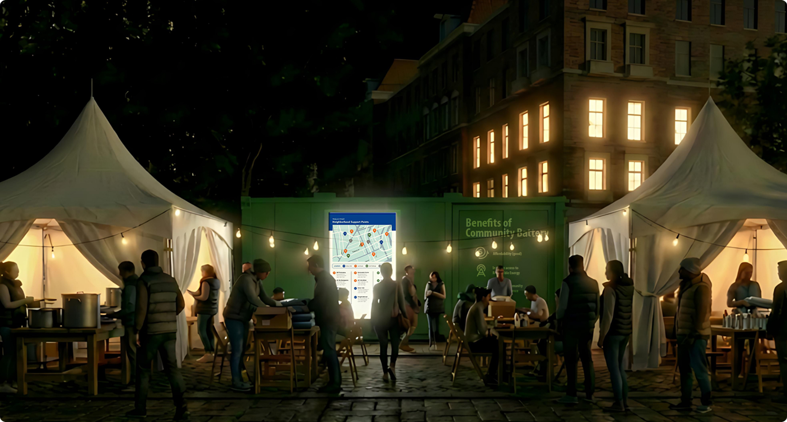
Render: daylightThe Dutch government's Denk Vooruit campaign encourages citizens to prepare for 72 hours without electricity.
Why 72 hours? After a major incident, emergency services may be busy restoring critical infrastructure or helping where the need is greatest, and utilities may be down. The NCTV's national manual asks households to get through the first three days on their own.
The risk is rising. Cyberattacks on power and water systems, sabotage linked to the war in Ukraine and extreme weather all threaten the infrastructure we depend on. Yet fewer than 30% of Dutch residents feel prepared.
Source: Dutch Brief, 18 November 2025 ↗
This project explores how community batteries can become strategic assets, supporting local energy needs while keeping critical services running when the grid fails.
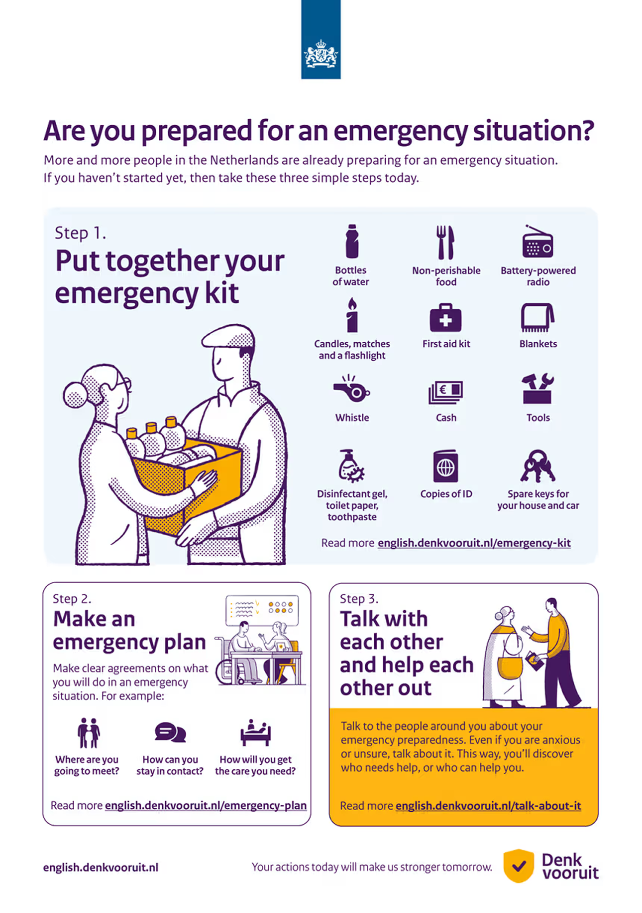
Denk Vooruit: visual summary click to zoomFrom understanding the crisis to designing for a resilient future.
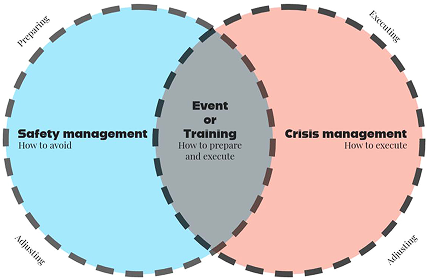
Venn: safety vs crisis mgmt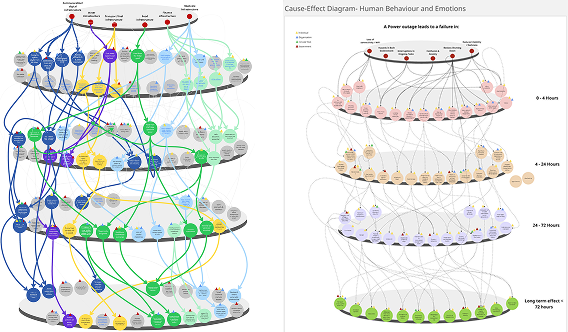
Causal effect diagram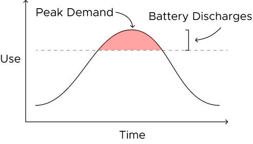
Peak demand chart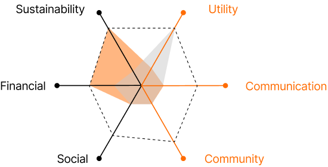
Radar: crisis vs daily use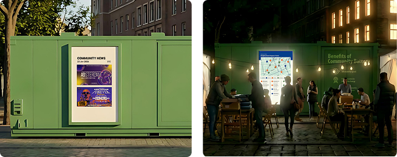
Day / night renders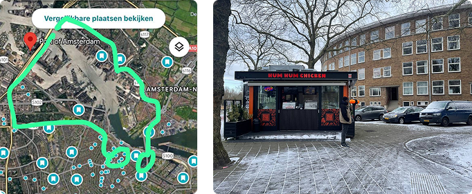
Amsterdam siting map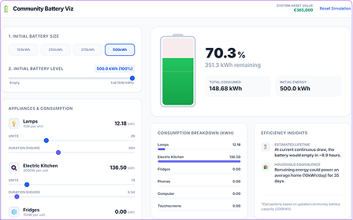
Tool screenshot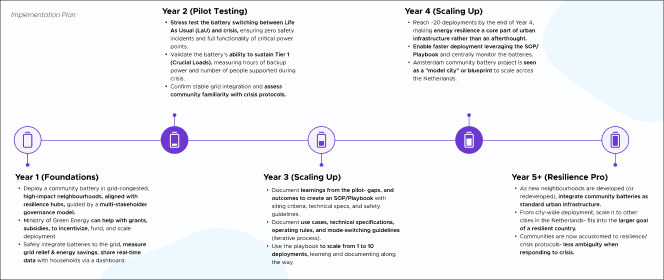
Implementation timeline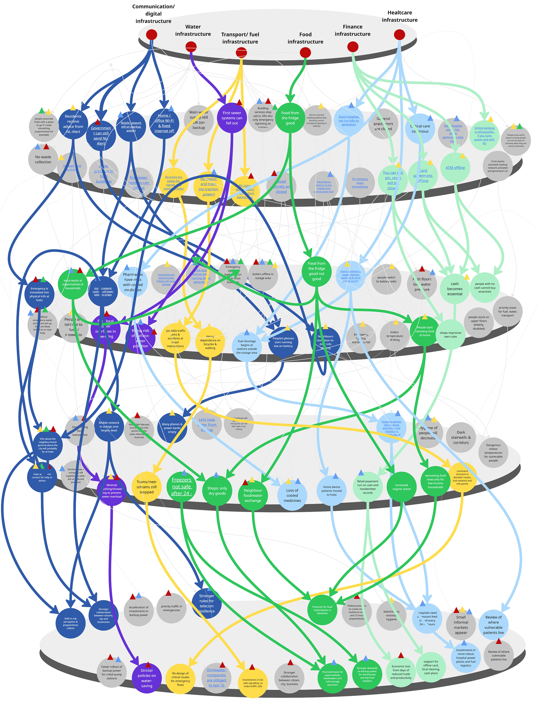
Waterfall / causal systems map click to zoomWe mapped the effects of what a 72 hour blackout does to a neighbourhood: which systems fail, and how each failure sets off the next.
A blackout is more than the lights going out. Almost everything in a neighbourhood relies or runs on electricity.
These systems also lean on each other. When one fails, it drags the next one down with it. We traced that chain across Amsterdam and mapped where each failure leads.
So the goal is not to keep the lights on. It is to find the key infrastructure points that people rely on, and protect those.
Six systems, one cascadeMobile networks and Wi-Fi fail. People lose touch with the outside world. Without trusted updates, rumours fill the gap.
Hospitals run low on generator fuel. Cooled medicines spoil. People on powered medical devices are left at risk.
Street lights and public transport stop. Some roads and tunnels close. Food, fuel and care get harder to reach.
The cold chain breaks and chilled food goes to waste. Households without reserves struggle to find safe food.
Card and digital payments stop. Cash becomes the only option. Shops set their own limits, and access turns unequal.
Water pressure drops and sewers can overflow. Toilets, showers and cleaning stop working, which brings health risks.
One failure never stays put. It spreads across transport, food, finance, water, healthcare and communications.
A few nodes hold the rest up. Keep those powered and the cascade stops there.
A blackout is a whole-system shock. Designing for it means designing for everything that runs on power.
Reference: Casey, J. A., Fukurai, M., Hernández, D., Balsari, S., & Kiang, M. V. (2020). Power Outages and Community Health: a Narrative Review. Current Environmental Health Reports, 7(4), 371–383. https://doi.org/10.1007/s40572-020-00295-0
A neighbourhood-scale battery that stores excess solar energy during the day and gives it back to the neighbourhood at peak demand, through the grid.
On normal days, it eases grid congestion. During an outage, it provides backup power that keeps the community going.
It works as a virtual energy store, and can be shared between the community, the local government and the grid provider.
Community batteries come in a range of sizes, from compact street units to container-sized systems, depending on their storage capacity.
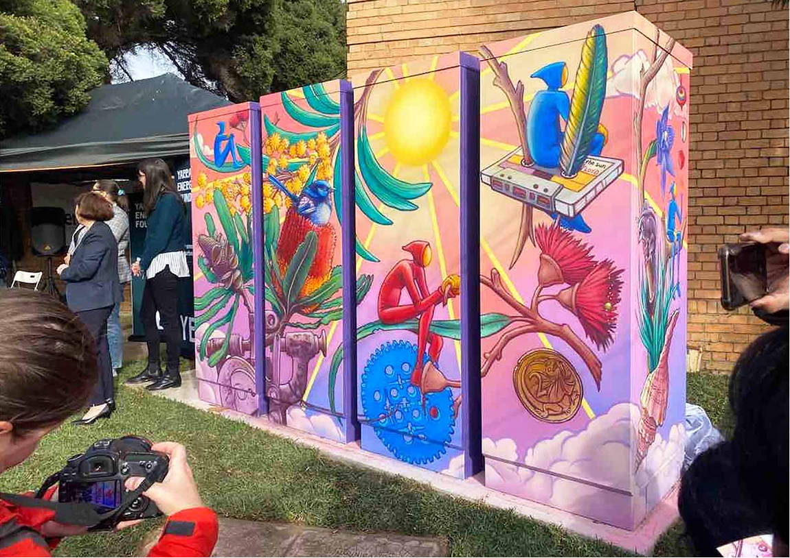
Battery photo 1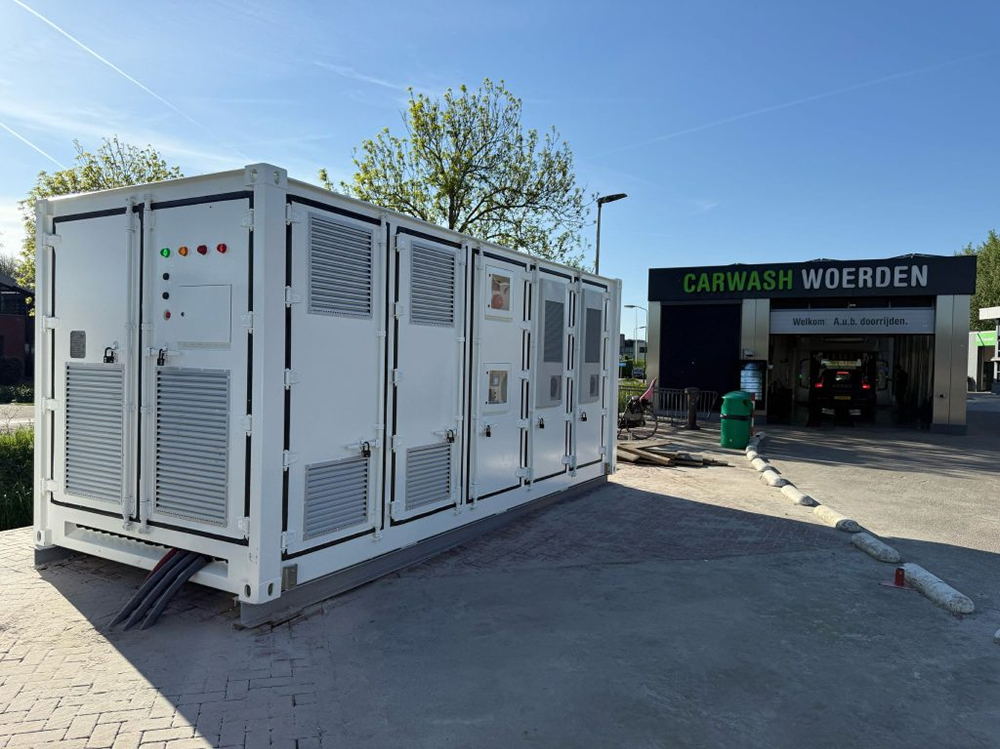
Battery photo 2Surplus rooftop solar, collected from the neighbourhood.
Back to the neighbourhood at peak demand.
Critical loads when the grid goes dark.
By day, rooftop solar makes more than the neighbourhood uses. Instead of sending the surplus back to the grid, the battery stores it. When the sun sets and demand rises, it releases that energy, so it is used when it is needed most.
In the evening, demand shoots up as lights, heating and induction stoves come on. This is the peak. The battery discharges into it, so less is drawn from the grid and the peak is shaved down.
Reference: Mohanty, A., Ramasamy, A., Verayiah, R., & Mohanty, S. (2024). Neighborhood and community battery projects: A systematic analysis of their current state and future prospects. Journal of Energy Storage, 95, 112525. https://doi.org/10.1016/j.est.2024.112525
A home battery serves one household. A community battery serves the whole street.
Sharing one system spreads the cost, opens it up to residents who can't install their own, and puts it to work for the whole grid.
Fixed costs are shared: one-time installation and grid connection
Open to residents who can't install solar because of cost, renting or their roof
Supports peak shaving, congestion management and frequency regulation
Can power resilience hubs and critical community services
Professionally managed by the grid operator or the manufacturer
Each household pays the full upfront cost of the battery and its installation
Limited to homeowners who can afford one and have a suitable roof or space
Serves a single home's demand, with little effect on local congestion
Backup for one household only, with nothing left for shared services
Maintenance and safety are left to each household to manage
A crisis-only battery is an expensive fire extinguisher: essential when needed, but idle most of the time. A community battery works every day, while staying ready for when crisis hits.
This brings us to the two modes the battery operates in.
The battery balances local energy supply and demand by storing excess renewable energy and releasing it when needed, reducing grid congestion and peak demand.
During a power cut, islanding lets the battery disconnect from the grid and keep critical local services powered.
The same battery is a community noticeboard on Tuesday and a lifeline on Thursday.
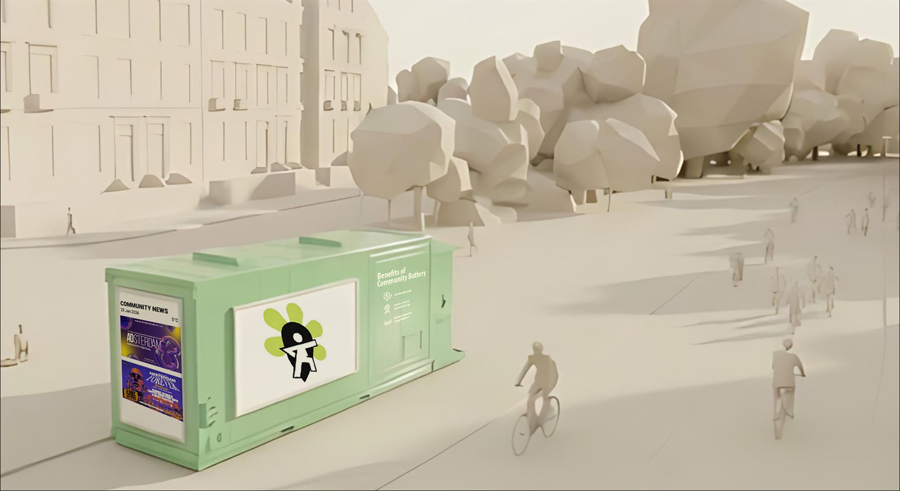
Local solar is stored and shared, so less comes from gas and coal at peak hours.
Renters and homes without suitable roofs get cheaper stored energy.
Off-peak energy is used at peak, lowering bills for the whole street.
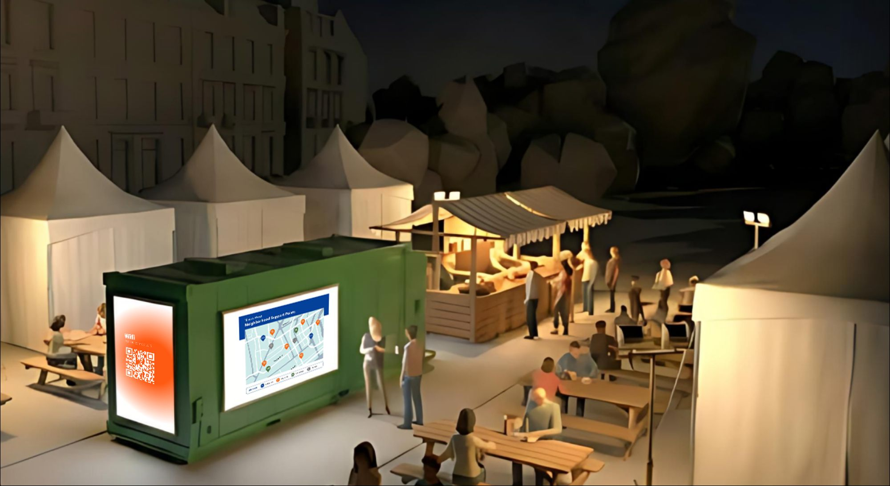
Disconnects from the main grid and runs as an energy island for critical services.
Keeps lighting, the crisis hub, charging, medical devices and Wi-Fi running.
Shows live emergency information and guides residents to care, food and shelter.
Local solar is stored and shared, so less comes from gas and coal at peak hours.
Renters and homes without suitable roofs get cheaper stored energy.
Off-peak energy is used at peak, lowering bills for the whole street.
Disconnects from the main grid and runs as an energy island for critical services.
Keeps lighting, the crisis hub, charging, medical devices and Wi-Fi running.
Shows live emergency information and guides residents to care, food and shelter.
Community batteries cost ≈ €430 per kWh of storage today. As the technology evolves, costs could fall to €182–253 per kWh, a 40–60% reduction.
Costs exclude installation. The hours shown under each battery depicts how long it could power critical infrastructure such as 50 fridges, 200 lights and 10 home ventilators.
References: ChargeBlock, battery containers ↗ · BattiQ, outdoor batteries ↗ · CE Delft (2021), Omslagpunt grootschalige batterijopslag ↗ · NCTV, critical infrastructure ↗
A project of this scale requires close coordination and knowledge exchange between stakeholders to align on how the community battery will be used.
Beyond the technology, a community battery depends on a social agreement between people on how its power is used.
Values agreed in advance decide who gets power in a blackout, avoiding chaos in the moment.
Clear coordination and a shared understanding between stakeholders turn these agreements into action.
To help communities and stakeholders plan how the battery is used, we built a tool for deciding which critical infrastructure gets power first.
Every community has different needs. The tool lets them plan and simulate different power-use scenarios before a blackout happens.
It also shows stakeholders, at a glance, how the battery is being used, so they can adapt as a situation unfolds.
Device power figures: EcoFlow, power outage plan for medically vulnerable family members ↗
Re-imagining the urban fabric of the Netherlands, with community batteries as standard urban infrastructure.
It starts with pilots in Amsterdam neighbourhoods and grows, step by step, into a roll-out across the country, making the Netherlands more resilient.
To see the detailed implementation plan, click here ↗.
Use community batteries to keep critical hubs running in blackouts, strengthen neighbourhood resilience, and ease Amsterdam's shift to affordable green energy.
Denk Vooruit asks citizens to be ready for 72 hours without power. This project goes beyond the ask, building the infrastructure that makes resilience real.
Every installation is one less pressure point on the national grid, absorbing surplus solar locally and easing peak demand for the wider energy system.
A shared resource that brings neighbours together, carrying local events and news day to day, and a trusted anchor when crisis hits.
In collaboration with the AMS Institute, Amsterdam ↗